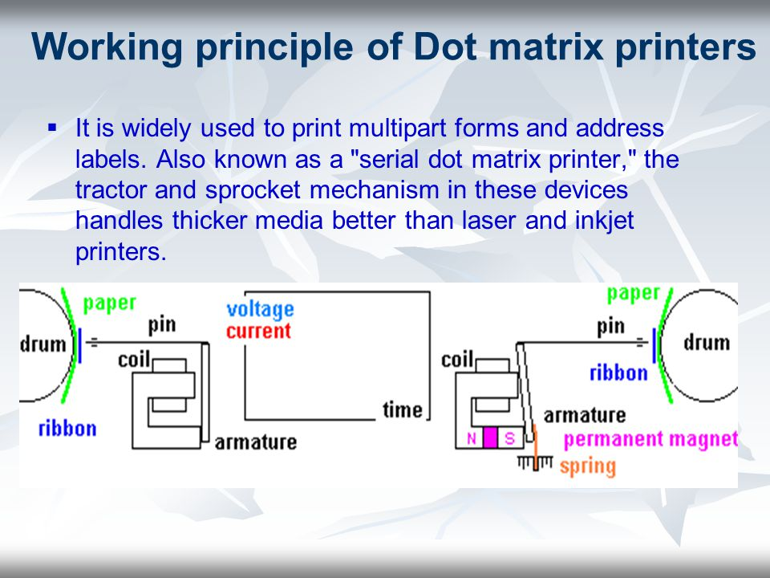

Dot-Matrix Printers
Impact dot matrix printing uses a print head that moves back-and-forth, or in an up-and-down motion, on the page and prints by impact, striking an ink-soaked cloth ribbon against the paper, much like the print mechanism on a typewriter. However, unlike a typewriter or daisy wheel printer, letters are drawn out of a dot matrix, and thus, varied fonts and arbitrary graphics can be produced.
These printers can print on multi-part (carbon or carbonless paper) forms since they print using mechanical pressure.
The alternative to dot matrix printing is sometimes known as a letter-quality printer or a line printer which use fully formed type elements that impact a sheet of paper.

Jump to Required Page :
Homepage
Impact Printer
Non-Impact Printer
Laser-Jet Printer
Ink-Jet Printer
Comparision Between Dot-Matrix, Laser-Jet and Ink-Jet Printers
About Us
Register for Getting Best Deals on Electronic Devices